Neves PT ManagerProduto real · dados sob o teu controlo
Feito para o terreno
Pensado para Personal Trainers presenciais
Uma ferramenta para apoiar a gestão diária dos teus alunos — da primeira avaliação à evolução ao longo do tempo — sem obrigar cada aluno a instalar outra aplicação.
1lugar para acompanhar o trabalho com cada aluno
A aplicação real
O teu trabalho, organizado e fácil de consultar.
Encontra alunos, regista treinos e avaliações e acompanha resultados numa interface criada para funcionar no telemóvel e em ecrãs maiores.
Gestão de alunos e histórico
Avaliações físicas e de performance
Treinos, agenda e assiduidade
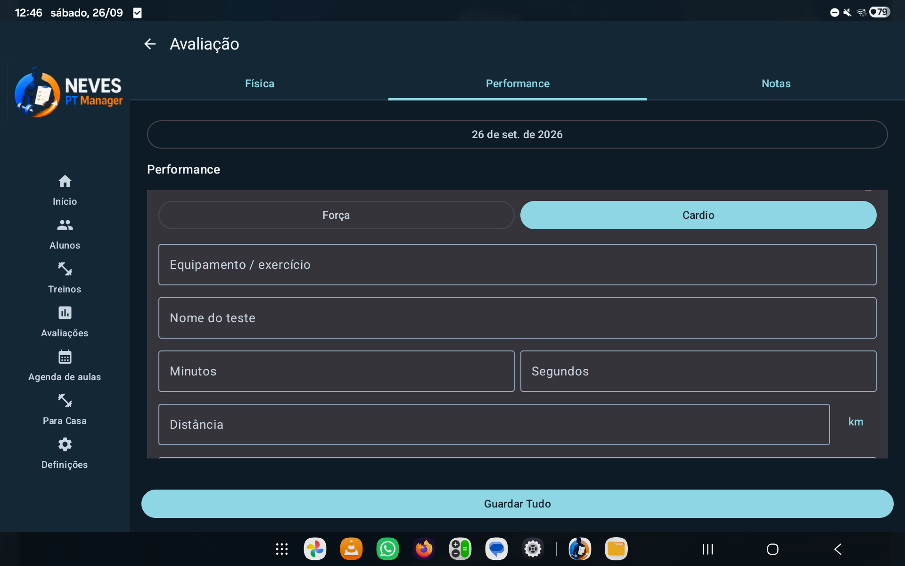
Avaliações físicas e de performance
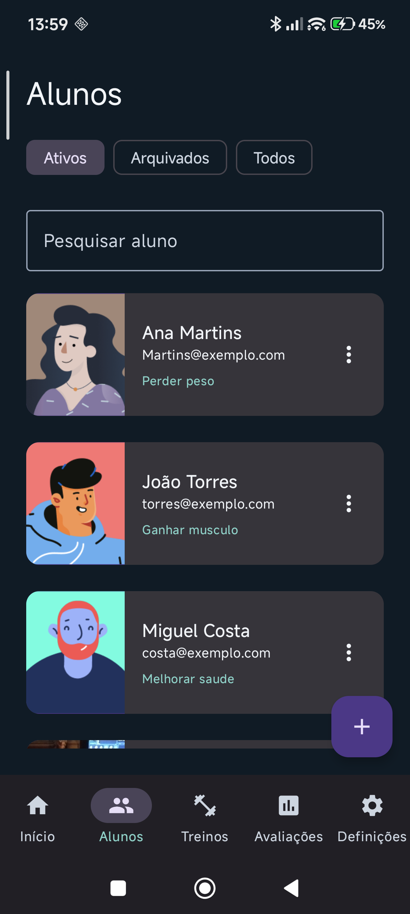
Gestão de alunos e histórico
Ferramentas do dia a dia
Da avaliação ao acompanhamento.
Funcionalidades concebidas para o terreno, sem transformar a tua rotina numa coleção de ecrãs desconectados.
01
Treinos e Prescrição
Séries, repetições, cargas e notas de exercício.
Registo intuitivo de treinos no terreno. Define tipo de carga (peso corporal, externo ou unilateral), séries, repetições e notas específicas de cada exercício em tempo real.
Peso Corporal & ExternoSéries e RepetiçõesNotas por Exercício
Registo de treino
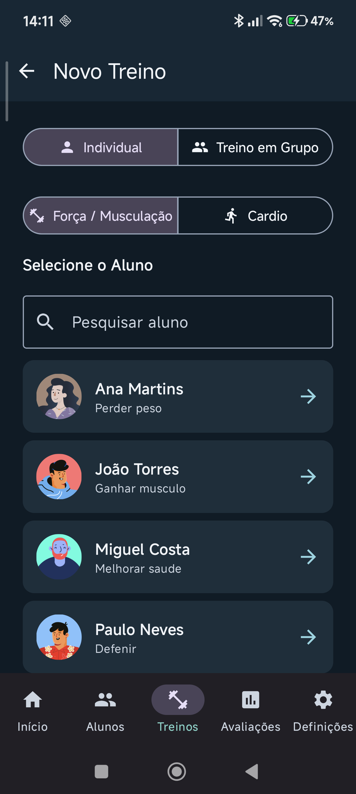
Exercícios
02
Avaliações e Composição Corporal
Perímetros, bioimpedância e curvas de evolução.
Acompanha o progresso físico com medições de perímetros, parâmetros completos de bioimpedância e gráficos automáticos de evolução ao longo do tempo.
Perímetros CorporaisBioimpedância CompletaGráficos de Evolução
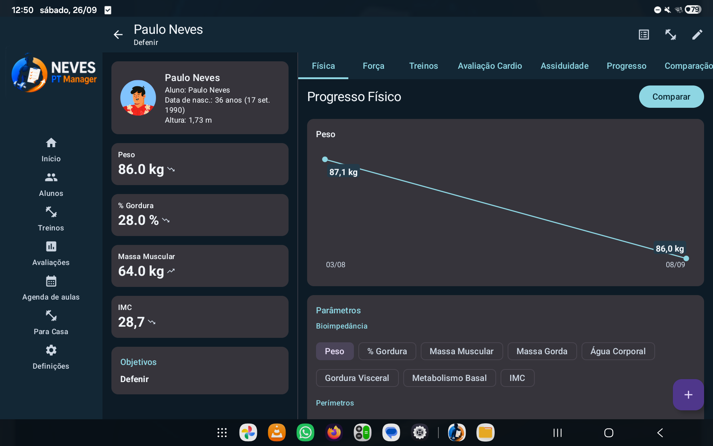
Progresso físico e bioimpedância
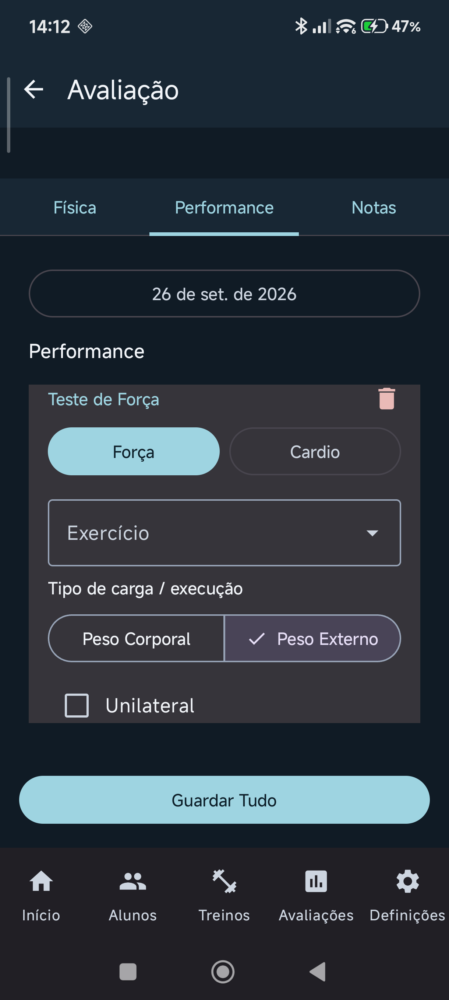
Avaliação de performance
03
Agenda e Assiduidade
Marcação rápida e calendário de sessões.
Gere o calendário de aulas por dia, semana ou mês. Marca presenças, faltas ou reagendamentos em segundos através do menu rápido no telemóvel.
Grelha HoráriaMenu Rápido de PresençaHistórico de Aulas
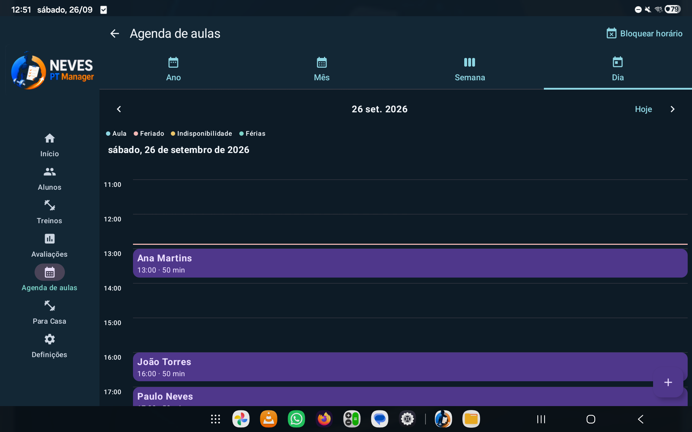
Agenda de aulas
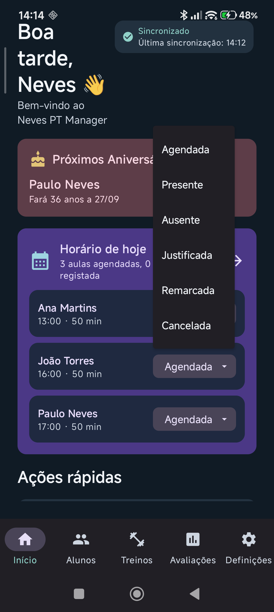
Marcação rápida
04
Partilha por aluno
Tu decides exatamente o que cada aluno pode ver.
Queres ocultar fotografias de evolução ou manter privadas as tuas notas de observação? Ajusta as opções disponíveis e o Neves Client apresenta apenas a informação que decidiste disponibilizar.
Avaliações e evoluçãoTreinos e assiduidadeObservações e fotografias
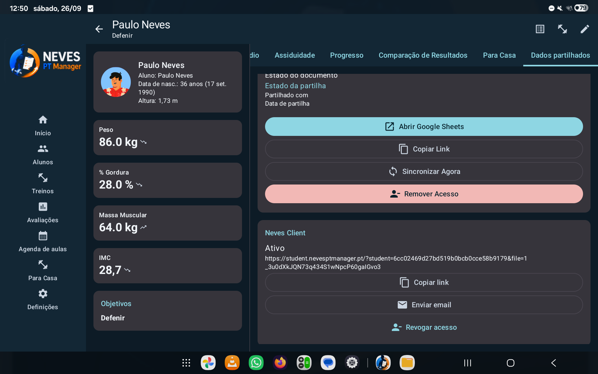
Partilha e sincronização
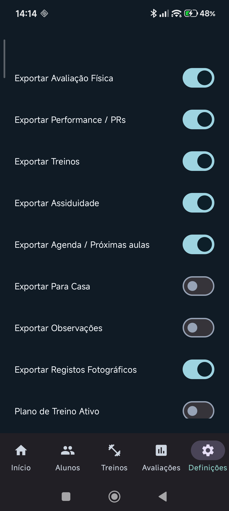
Toggles por aluno
Uma experiência Web para o aluno
Os teus alunos não querem instalar mais uma app no telemóvel.
Com o Neves Client, consultam no browser os treinos e a informação que decidiste partilhar, sem anúncios e sem instalar nada. Existe também a Google Sheet do aluno, e os dados continuam armazenados no Google Drive do PT.
Requer autorização prévia da tua conta Google pelo teu Personal Trainer.
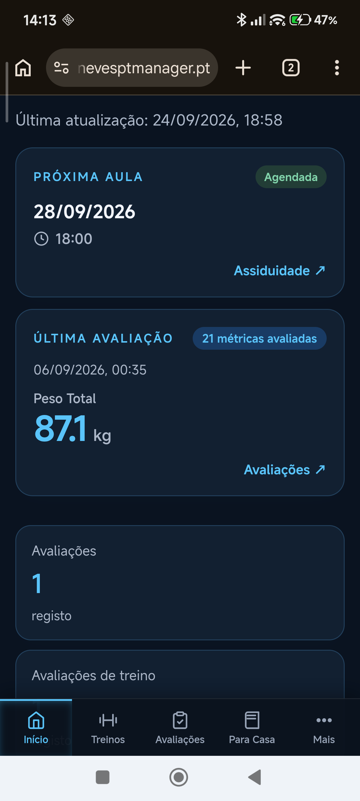
Neves Client · browser
🌐
O treino do aluno, à distância de um link.Sem app obrigatória
Uma ferramenta moldável
O teu método de trabalho não tem de se adaptar à aplicação.
Configura campos de avaliação, Regiões, Grupos Musculares, a Biblioteca de Exercícios e as permissões de partilha de acordo com a forma como trabalhas.
Campos de avaliaçãoRegiõesGrupos MuscularesExercíciosPartilha
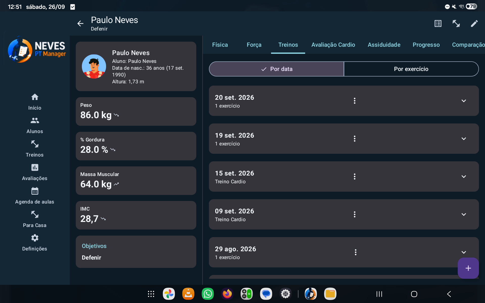
Registo de treino
Google Drive
Os teus dados continuam teus.
O Neves PT Manager utiliza a infraestrutura Google associada à tua conta. Os dados e ficheiros relevantes são guardados no teu Google Drive, onde manténs controlo sobre os ficheiros.
A sincronização multidispositivo e os mecanismos de backup foram desenhados para evitar que os dados dos teus alunos dependam de uma base de dados central do serviço.